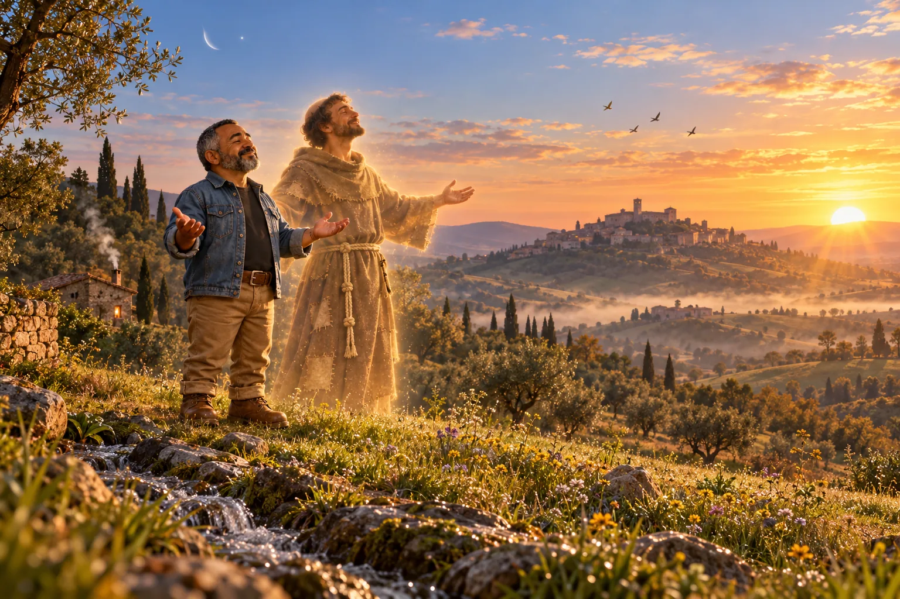

Cântico das Criaturas: louvado sejas, meu Senhor
O louvor que São Francisco compôs em 1225, já doente e quase cego, pelo sol, pela lua, pela água, pelo fogo, pela terra e até pela morte. Uma oração sobre a gratidão que só se aprende quando não sobra muito.

Um louvor nascido da dor
Em 1225, um ano antes de morrer, Francisco estava muito doente. Os olhos, gravemente feridos, quase não enxergavam, e a luz do sol os fazia doer. Hospedado numa pequena cabana junto a São Damião, perto de Santa Clara e das irmãs, ele passava as noites sem dormir, atormentado pelas dores e pelos ratos que corriam pelo chão.
Depois de uma dessas noites, Francisco sentiu no coração a certeza de que Deus estava com ele. Ao amanhecer, chamou os irmãos e cantou um louvor novo: um agradecimento a Deus por todas as criaturas, a começar pelo irmão Sol, justamente aquele cuja luz ele já não podia suportar.
O Cântico das Criaturas, também chamado de Cântico do Irmão Sol, é um dos primeiros poemas da língua italiana. Francisco não o escreveu em latim, a língua dos livros, mas no italiano falado pelo povo da Úmbria, para que todos pudessem cantar. E ele cresceu com a vida dele: a estrofe do perdão foi acrescentada para reconciliar o bispo e o prefeito de Assis, que estavam brigados, e a estrofe da “irmã Morte”, nos seus últimos dias.
O Cântico
Altíssimo, onipotente, bom Senhor,
teus são o louvor, a glória, a honra e toda bênção.
Só a ti, Altíssimo, eles pertencem,
e nenhum homem é digno de dizer o teu nome.
Louvado sejas, meu Senhor, com todas as tuas criaturas,
especialmente o senhor irmão Sol,
que é o dia, e por ele nos iluminas.
E ele é belo e radiante, com grande esplendor:
de ti, Altíssimo, é a imagem.
Louvado sejas, meu Senhor, pela irmã Lua e pelas estrelas:
no céu as formaste claras, preciosas e belas.
Louvado sejas, meu Senhor, pelo irmão Vento,
e pelo ar, pelas nuvens, pelo céu sereno e por todo tempo,
pelo qual dás sustento às tuas criaturas.
Louvado sejas, meu Senhor, pela irmã Água,
que é muito útil e humilde, preciosa e pura.
Louvado sejas, meu Senhor, pelo irmão Fogo,
com o qual iluminas a noite:
e ele é belo e alegre, vigoroso e forte.
Louvado sejas, meu Senhor, pela irmã nossa mãe Terra,
que nos sustenta e governa,
e produz diversos frutos, com flores coloridas e ervas.
Louvado sejas, meu Senhor, pelos que perdoam por teu amor
e suportam enfermidades e tribulações.
Bem-aventurados os que as suportarem em paz,
porque por ti, Altíssimo, serão coroados.
Louvado sejas, meu Senhor, pela irmã nossa Morte corporal,
da qual nenhum homem vivo pode escapar.
Ai dos que morrerem em pecado mortal!
Bem-aventurados os que ela encontrar na tua santíssima vontade,
porque a segunda morte não lhes fará mal.
Louvai e bendizei a meu Senhor, e rendei-lhe graças,
e servi-o com grande humildade.
Tradução de A Boa Idade a partir do texto original, no italiano antigo da Úmbria, que começa assim: “Altissimu, onnipotente, bon Signore, tue so’ le laude, la gloria e l’honore et onne benedictione.”
Para entender o Cântico
- Por que “irmão” e “irmã”? Para Francisco, todas as criaturas saíram das mãos do mesmo Pai, por isso são da mesma família. O sol, a água e a terra não são donos nem escravos do homem: são irmãos.
- “Louvado sejas”, em italiano antigo, é “Laudato si’”. Foi daí que o Papa Francisco tirou o nome da sua encíclica de 2015 sobre o cuidado com a casa comum.
- A “segunda morte” é uma expressão do livro do Apocalipse (2,11) e quer dizer a separação eterna de Deus. Para quem vive na vontade de Deus, a morte do corpo é apenas uma passagem, por isso Francisco pôde chamá-la de “irmã”.
Uma palavra do Sr. Oliveira
Gratidão é um sentimento que só aprendemos de fato quando não nos sobra muito daquilo que pedimos. É aí que entendemos que querer e merecer são coisas diferentes, e que muitas vezes o que não recebemos não é falta de mérito, mas aprendizado para crescer.
Quem não ouve agradece o toque do vento e a suavidade das flores. Quem não vê agradece o calor do sol, o frescor da noite, o som da água do riacho correndo e o perfume das flores se abrindo na primavera.
Francisco sabia disso. Quando compôs este Cântico, já estava doente e quase cego, e a luz do sol fazia doer os seus olhos. Mesmo assim, louvou a Deus pelo irmão Sol.
É nos momentos de dificuldade que entendemos que o pouco que temos é um presente.
Sempre haverá quem agradeça por ter muito menos do que nós e, ainda assim, seja muito mais feliz, porque entendeu o significado e o poder das coisas de Deus, e a bênção que a gratidão lhe permite ver e sentir.
Para rezar hoje
Faça o seu próprio Cântico. Antes de dormir, ou pela manhã, pense em três coisas simples do seu dia pelas quais você ainda não agradeceu: a água do banho, o café, o sol na janela, a voz de alguém querido. Depois diga, como Francisco: “Louvado sejas, meu Senhor, por…”, e complete com cada uma delas. Você vai perceber que tem mais motivos para agradecer do que imaginava.
Conheça também a primeira oração de Francisco, rezada no início da sua caminhada: Oração diante do Crucifixo: iluminai as trevas do meu coração. E leia a história completa dele em São Francisco de Assis: do filho do rico comerciante ao Pobrezinho de Deus.